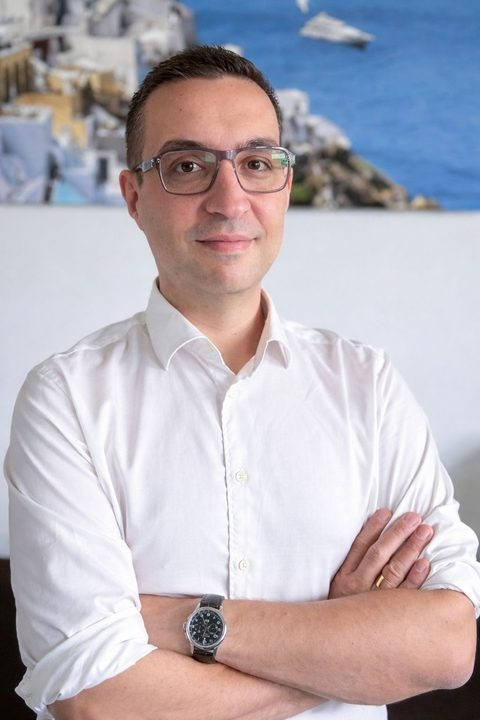

Louis-Charles
Vigneron
Ostéopathie · Posturologie · Auriculothérapie · Kinesio Taping
Une approche globale et complémentaire de la médecine, au service de votre équilibre. Pour tous les publics, de la naissance à l'âge adulte.
Urgences assurées
Prise en charge mutuelles
Louis-Charles Vigneron
- Ostéopathe D.O. installé à Saint-Clair-du-Rhône depuis plus de 16 ans, j’ai développé une approche qui va au-delà du traitement symptomatique.
- Ma pratique repose sur une vision globale du corps, où chaque douleur a une origine qu’il est essentiel de comprendre et de corriger durablement.
- Ce qui distingue ma prise en charge, c’est l’association de trois approches complémentaires rarement réunies en cabinet - l’ostéopathie, pour redonner de la mobilité aux structures, - l’auriculothérapie, pour agir sur la régulation du système nerveux et des douleurs, - et la posturologie, pour identifier et corriger les causes profondes des déséquilibres.
- Cette combinaison permet d’aller plus loin qu’un simple soulagement : elle vise à traiter l’origine des troubles et à éviter leur réapparition.
- Concrètement, cela signifie une prise en charge plus précise, plus personnalisée et souvent plus durable, adaptée à chaque patient — du nourrisson à l’adulte, en passant par les sportifs et les femmes enceintes.
- Mon objectif est simple : vous aider à retrouver un équilibre stable, en m’adaptant à votre histoire, votre mode de vie et vos besoins spécifiques.
Ostéopathe D.O. diplômé, je pratique à Saint-Clair-du-Rhône depuis plus de 16 ans au sein du Pôle Santé Yvan Esson. Mon approche est globale et complémentaire : chaque patient est unique, chaque traitement l'est aussi.
En complément de l'ostéopathie, je me suis formé à l'auriculothérapie — reconnue par l'OMS — et ai obtenu le Diplôme Universitaire de Corte en posturologie, pour proposer une prise en charge toujours plus complète de vos déséquilibres.
Je reçois tous les publics, du nourrisson à la personne âgée, et assure les urgences en semaine.
Avis patients
Vous avez consulté ? Votre avis guide d'autres patients.
Ostéopathie
L'ostéopathie propose une approche complémentaire à la médecine classique. Un traumatisme physique ou émotionnel, même minime, peut provoquer une désadaptation de l'organisme et des troubles fonctionnels.
Nourrisson
ℹ Nécessité d'un courrier de non contre-indication du médecin.
- Accouchement sous péridurale
- Travail trop long (+ 8h) ou trop court (- 2h)
- Naissance prématurée, césarienne, siège
- Cordon ombilical autour du cou
- Torticolis, asymétrie de la tête (plagiocéphalie)
- Reflux gastro-œsophagien, régurgitations
- Coliques, diarrhées, constipation
- Troubles du sommeil, irritabilité
- Troubles ORL chroniques (otites, bronchites…)
Enfant
- Attitude scoliotique, lordose, cyphose
- Maux de tête, de dos, articulaires
- Port d'un appareil dentaire, orthodontie
- Affections ORL à répétition
- Troubles digestifs
- Difficultés de concentration, hyperactivité
- Troubles du sommeil, dyslexie
Adulte
- Orthopédique : entorses, tendinites, dorsalgies, lumbagos
- Neurologique : sciatique, crurale, névralgies
- Digestif : RGO, hernie hiatale, constipation
- ORL : rhinite, sinusite
- Migraines, vertiges, acouphènes
- Stress, angoisse, troubles du sommeil
- Fatigue chronique, état dépressif
- Bruxisme, problèmes dentaires
Femme enceinte
- Douleurs du dos et du bassin
- Sciatique, cruralgie, névralgies
- Nausées, vomissements, reflux, ballonnements
- Oppression thoracique
- Troubles circulatoires
- Insomnies, angoisse, fatigue, stress
Sportifs
- Douleurs articulaires et/ou musculaires
- Tendinites, entorses, déchirures, contractures
- Pubalgies
Séquelles de traumatismes
- Accidents de voiture (AVP)
- Chutes, chocs, séquelles de fractures
- Travail pré et post-chirurgical
Anamnèse
Recueil de votre histoire médicale, motifs de consultation et antécédents.
Bilan ostéopathique
Examen postural et tests de mobilité pour identifier les zones de tension.
Traitement
Techniques adaptées : manipulations, mobilisations, viscérales ou crâniennes.
Conseils & suivi
Recommandations personnalisées et évaluation du suivi nécessaire.
Posturologie
Posturologie
Analyse et correction des déséquilibres posturaux
« Remettre une vertèbre en place c'est bien, savoir pourquoi elle est déplacée c'est mieux. »— Dr Bernard Bricot
La posturologie est une discipline paramédicale pluridisciplinaire qui étudie les mécanismes biomécaniques et neuro-physiologiques qui régulent la posture de l'être humain. La pathologie posturale est un déséquilibre des capteurs posturaux, générant un excès de contraintes, et responsable de pathologies musculo-articulaires et d'une modification du schéma moteur.
Ce phénomène a été décrit pour la première fois en 1979 par le Dr Henriques Martins Da Cuhna.
La reprogrammation posturale globale est l'élément central du traitement, par normalisation des capteurs posturaux.
Auriculothérapie
Définition et origine
Thérapie par réflexothérapie auriculaire
L'auriculothérapie stimule des points précis sur le pavillon de l'oreille pour agir sur l'ensemble du corps. Développée par le Dr Paul Nogier à Lyon dans les années 1950, elle est reconnue par l'OMS comme thérapie complémentaire.
Comment puis-je vous aider ?
Pour tous
- Douleurs chroniques (dos, articulations, migraines)
- Troubles anxieux, stress
- Trouble du sommeil, insomnie
- Addictions (tabac, suralimentation)
- Troubles fonctionnels digestifs
- Etats vertigineux, instabilité posturale
- Douleurs neuropathiques
- Aide à la perte de poids
- Troubles ORL
- Etats de stress post-traumatique
Déroulement d'une consultation
Bilan clinique
Identification des points auriculaires actifs selon votre état.
Stimulation
Par laser, électrostimulation, pastilles magnétiques (Magrain) ou pression.
Durée de la séance
30 à 45 minutes environ.
Programme de soins
Défini selon votre état et vos objectifs personnels.
Kinesio Taping
Kinesio Taping
Bandages neuro-musculaires fonctionnels
Technique de bandage élastique développée par le Dr Kenzo Kase. Ces bandes permettent une amplitude de mouvement complète tout en apportant un soutien ciblé.
- –Soulagement des douleurs musculaires et articulaires
- –Soutien sans restriction du mouvement
- –Réduction des œdèmes et hématomes
- –Rééducation posturale et proprioceptive
- –Accompagnement sportif (prévention et récupération)
L'ostéopathie au service des entreprises
Prévenir plutôt que subir — Les troubles musculo-squelettiques (TMS) représentent la première cause de maladie professionnelle en France. Douleurs dorsales, cervicalgies, tendinites — ces pathologies touchent tous les secteurs et génèrent fatigue, inconfort et absentéisme.
Une approche globale adaptée au monde du travail
L'ostéopathie en entreprise s'inscrit dans une démarche de prévention active, en identifiant et corrigeant les déséquilibres fonctionnels avant qu'ils ne deviennent invalidants. Couplée à la posturologie, elle permet d'analyser les mauvaises postures à l'origine des tensions chroniques et de proposer des corrections durables plutôt que symptomatiques.
Devis sous 24h
Pour toute demande de devis, contactez-moi à devis.osteoposturo@gmail.com.
Ce que je propose
Bénéfices pour vos équipes
- Réduction de l'absentéisme lié aux TMS
- Amélioration du confort et de la concentration
- Valorisation de votre démarche de prévention santé (QVCT)
Vous souhaitez mettre en place un programme de prévention pour vos équipes, en présentiel ou en télétravail ? Contactez-moi pour construire ensemble une solution adaptée.
Tarifs & remboursements
Reçu d'honoraires remis systématiquement à l'issue de chaque séance.
🔵 Les actes d'ostéopathie ne sont pas pris en charge par la Sécurité Sociale. De nombreuses mutuelles remboursent tout ou partie de la consultation.
🚗 Les assurances automobiles prennent en charge les consultations faisant suite à un accident dont vous auriez été victime.
💳 Modes de règlement : carte bancaire, chèque (encaissement différé possible) ou espèce
Prise de rendez-vous en ligne
Réservez votre consultation directement sur Doctolib, disponible 24h/24 et 7j/7.
Me contacter
-
📍
-
📞
Téléphone
06 79 39 74 93 -
🕐
Horaires
Lundi au vendredi : 9h – 20h
Sur rendez-vous uniquement
Urgences assurées
-
♿
Accessibilité
Cabinet accessible aux PMR
Parking gratuit sur place